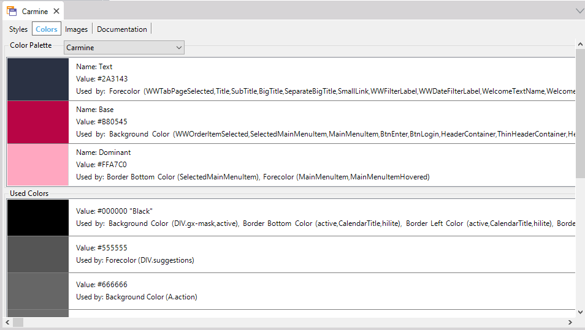

The purpose of the Colors Tab is to offer a color scheme, usually defined by graphic designers, to be used in the entire application.
The Colors option allows creating and editing colors in the Color Palette object, in addition to showing the Theme elements that use them. It is accessed from the Theme object. Its main purpose is to contain the colors included in the Palette option of the Color Editor and to allow to change any color globally (to all the objects who use it).
This tab is divided into 2 sections:
- Color Palette
This section contains the colors defined for the palette. It allows creating new colors, as well as deleting, editing and renaming existing colors.
- Used Colors
This section shows all the colors used in the Theme (that don't belong to the palette). These colors can be modified (this causes the color to be updated in all the objects that use it), added to the palette or deleted. If a color from this section is deleted, the default color is automatically assigned to all the properties that were using it.

Each Color has, at most, 3 properties:
- Name
Defines the name of the color, the name must be unique. In Used Colors the color is not defined by a name but by its value.
- Value
Defines the value of the RGB components of the color (the alpha component isn't defined because the Palette is used to define base colors).
- Used By
Shows a list of the classes that use the color in the Theme.
Note: The colors are defined using the Color Editor.
The color palette defines a Color scheme, that is an arrangement or pattern of colors conceived of as forming an integrated whole. The color palette is usually defined by graphic designers.
The color scheme is composed of the following colors, although you can define more:
- Dominant
Is the main color.
- Base
This is a visually weak, or subordinate, color. It should be used to contrast or complement the dominant color.
- Accent
Is used for emphasis in a color scheme. These colors can often be bold or vivid and are used for emphasize or contrast.
- Text
Is used to define the color of text.
- Accent Text
Is used for emphasis in text strings.
For Smart Devices applications, these colors will apply by default to the following properties and classes:
- Base:
- Background Color property for: Application class.
- Dominant:
- Background Color property for: ApplicationBars, Attribute, AttributeTitle, AttributeSubtitle, AttributeReadOnly, Button, ButtonSectionLink, DashboardOption, DashboardOptionPanoramaItem, Grid, GridRow, GridRowOdd, GridRowEven, Group, GroupSeparator, HorizontalLine, MatrixLineSeparator, Image, Tab, Table, TabPage, TabPageSelected, TabPageUnselected, Table, MatrixCell, MatrixSelectedCell, MatrixAxisTable, MatrixEvenRowTable, MatrixOddRowTable, MatrixSelectedRowTable, TableDetail, TableSection, TextBlock, TextBlockGroupCaption, TextBlockGroupApplicationTitle, TextBlockBackButton, TextBlockSectionTitle, TextBlockTitle, TextBlockSubtitle, Matrix and MatrixAxisLabel classes.
- Text:
- Forecolor property for: ApplicationBars, Attribute, AttributeTitle, AttributeSubtitle, AttributeReadOnly, Button, ButtonSectionLink, DashboardOption, DashboardOptionPanoramaItem, TabPage, TabPageSelected, TabPageUnselected, TextBlock, TextBlockGroupCaption, TextBlockGroupApplicationTitle, TextBlockBackButton, TextBlockSectionTitle, TextBlockTitle, TextBlockSubtitle and MatrixAxisLabel classes.
- Accent:
- Border Color property for: Attribute, AttributeTitle, AttributeSubtitle, AttributeReadOnly, Button, ButtonSectionLink, DashboardOption, DashboardOptionPanoramaItem, Grid, GridRow, GridRowOdd, GridRowEven, Group, GroupSeparator, Image, Tab, Table, MatrixCell, MatrixSelectedCell, MatrixAxisTable, MatrixEvenRowTable, MatrixOddRowTable, MatrixSelectedRowTable, TableDetail, TableSection, TextBlock, TextBlockGroupCaption, TextBlockGroupApplicationTitle, TextBlockBackButton, TextBlockSectionTitle, TextBlockTitle, TextBlockSubtitle, Matrix and MatrixAxisLabel classes.
- Highlighted Background Color property for: Attribute, AttributeTitle, AttributeSubtitle, AttributeReadOnly, Button, ButtonSectionLink, DashboardOption, DashboardOptionPanoramaItem, Grid, GridRow, GridRowOdd, GridRowEven, Group, Image, Tab, TabPage, TabPageSelected, TabPageUnselected, Table, MatrixCell, MatrixSelectedCell, MatrixAxisTable, MatrixEvenRowTable, MatrixOddRowTable, MatrixSelectedRowTable, Table, TableDetail, TableSection, TabPage, TextBlock, TextBlockGroupCaption, TextBlockGroupApplicationTitle, TextBlockBackButton, TextBlockSectionTitle, TextBlockTitle, TextBlockSubtitle, Matrix and MatrixAxisLabel classes.
- Line Color property for: Tab class.
- Accent Text:
- Highlighted Forecolor for: Attribute, AttributeTitle, AttributeSubtitle, AttributeReadOnly, Button, ButtonSectionLink, DashboardOption, DashboardOptionPanoramaItem, TabPage, TabPageSelected, TabPageUnselected, TextBlock, TextBlockGroupCaption, TextBlockGroupApplicationTitle, TextBlockBackButton, TextBlockSectionTitle, TextBlockTitle, TextBlockSubtitle, classes.
This feature is available as of GeneXus Tilo Beta 3
|